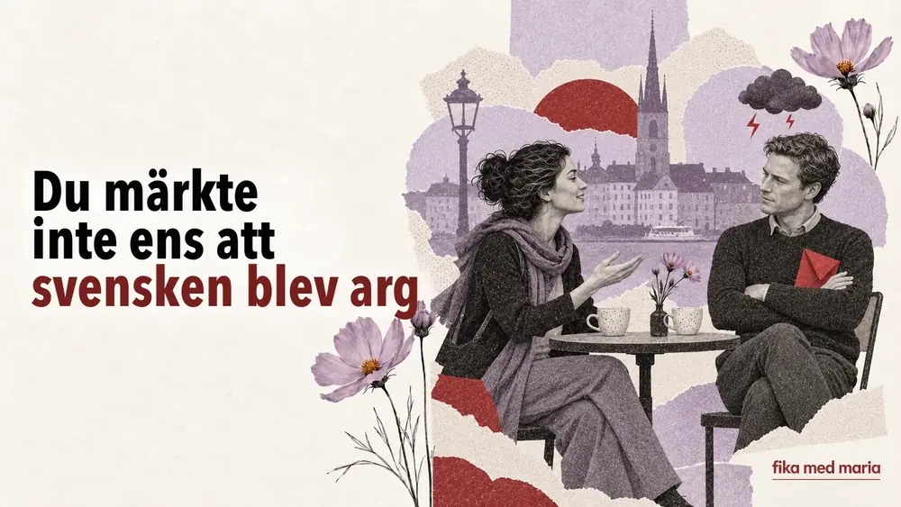

Du märkte inte ens att svensken blev arg på dig

Föreställ dig att en kollega säger Det vore bra om du kunde skicka rapporten lite tidigare nästa gång. Du hör en lugn röst, konjunktiv och ordet lite. Det verkar bara vara ett vänligt tips.
I själva verket har rapporten redan blivit ett problem.
Svenskt missnöje höjer ofta inte rösten. Det tonar ner hur kategorisk frasen låter – men inte hur allvarligt budskapet är.
Varför en ordagrann översättning inte hjälper
Frasen Det vore bra om… kan översättas till ukrainska som ”Було б добре, якби…” (”det skulle vara bra om…”). På ukrainska låter det ibland som en önskan som inte är bindande. I ett svenskt arbetssammanhang kan det vara ett helt konkret krav, framfört på ett mjukt sätt.
Jämför:
- Skicka rapporten tidigare nästa gång. – En rak uppmaning.
- Kan du skicka rapporten tidigare nästa gång? – En fråga.
- Det vore bra om du kunde skicka rapporten lite tidigare nästa gång. – Ett önskemål i konjunktiv.
Grammatiskt är den tredje varianten den mjukaste. Men som budskap kan alla tre betyda samma sak: nästa gång ska rapporten komma in tidigare.
Dämpande ord
För att kritik inte ska låta som ett angrepp omges den ofta av ord som mjukar upp formuleringen:
- kanske – gör påståendet mindre säkert;
- lite – tonar ner det som sägs;
- eventuellt – om det skulle behövas;
- jag tänker att… – en åsikt som läggs fram som en tanke;
- skulle vi kunna… – ett förslag i form av en fråga;
- det vore bra om… – en önskan som kan fungera som ett krav;
- jag är inte helt säker på att… – ett artigt sätt att säga att du tvivlar.
Till exempel:
Jag tänker att vi kanske behöver se över det här en gång till.
Ordagrant är det en försiktig tanke om att vi kanske behöver gå igenom saken en gång till. I praktiken kan budskapet vara enklare: ”Det här behöver göras om.”
Tre nivåer av svenskt missnöje
1. En försiktig signal
Det blev kanske inte riktigt som vi hade tänkt oss.
Ungefär: resultatet blev nog inte riktigt som vi hade planerat.
Det är inte nödvändigtvis en katastrof, men den som säger det är inte nöjd med resultatet.
2. Ett tydligt problem i mjuk form
Vi behöver nog prata om hur det här fungerar.
Ungefär: vi behöver troligen ta ett samtal om hur det här fungerar.
Ordet nog tar inte bort behovet av ett samtal. Tvärtom är samtalet i praktiken redan inplanerat.
3. Tålamodets gräns
Det här fungerar faktiskt inte.
Ungefär: sanningen är att det här inte fungerar.
När förbehållen och de dämpande orden försvinner är situationen troligen redan allvarlig.
Arga lappar: konflikt på papper
En genre för sig i Sverige är de arga lapparna i gemensamma utrymmen: i tvättstugan, trappuppgången, kontorsköket eller vid soptunnorna.
De kan börja mycket artigt:
Hej! En liten påminnelse om att…
Ungefär: en vänlig hälsning och en liten påminnelse om att…
Sedan följer en detaljerad beskrivning av vem som sorterar soporna fel, lämnar ludd i torktumlaren eller tar någon annans tvättid.
Frasen en liten påminnelse betyder inte att problemet är litet. Den betyder att den som skriver försöker hålla en socialt acceptabel ton.
Så svarar du på sådan kritik
Den sämsta strategin är att ignorera innehållet för att formen var mjuk. Bättre är att kort visa att du har uppfattat budskapet:
- Jag förstår. Jag ser till att det blir klart tidigare nästa gång.
- Tack för att du säger till. Jag ska tänka på det.
- Jag förstår hur du menar. Ska vi gå igenom vad som behöver ändras?
Om du inte förstår hur allvarlig situationen är, be om ett förtydligande:
Menar du att jag behöver ändra det redan nu, eller till nästa gång?
Det är mycket säkrare än att försöka gissa sig till det dolda budskapet.
Chefen säger:
Det vore bra om du kunde vara lite mer förberedd till nästa möte.
Hur är det bäst att uppfatta det?
- Förberedelser spelar inte så stor roll.
- Till nästa möte behöver du komma bättre förberedd.
- Mötet ställs troligen in.
Visa svaret
Rätt svar: 2.
På lektionerna hos Fika med Maria går vi inte bara igenom hur en fras översätts, utan också vad man gör med den: ber om något, säger nej, kritiserar eller sätter en gräns. Privatlektioner.
Undviker alla svenskar direkta konflikter?
Nej. Stilen beror på person, region, ålder och situation. Men mjuka formuleringar är verkligen vanliga, både i samtal på jobbet och i vardagen.
Måste man själv alltid uttrycka sig så indirekt?
Nej. Det räcker att uttrycka sig tydligt, lugnt och utan anklagelser. Viktigare är att lära sig förstå olika grader av direkthet.